Форматирование документа
Форматирование документа — настройка внешнего вида текста: шрифты, отступы, выравнивание и другие элементы, делающие документ понятным и аккуратным.
Форматирование включает в себя следующие элементы:
- Выбор шрифта и размера: настройка типа шрифта (например, Arial, Times New Roman) и его размера для удобства чтения.
- Выравнивание текста: определение, как текст будет выровнен на странице — по левому, правому краю, по центру или по ширине.
- Отступы и интервалы: установка отступов перед абзацами, между абзацами, межстрочного интервала для улучшения восприятия текста.
- Цвет текста и фона: изменение цвета текста и фона документа для выделения важных частей или создания эстетичного оформления.
- Нумерация и маркеры: настройка нумерации и маркеров для упорядочивания информации.
- Добавление элементов: вставка изображений, таблиц, графиков, гиперссылок и других объектов. Фон страницы: настройка фона документа для улучшения его визуального вида.
Шрифт
ℹ️ Шрифт можно изменить двумя способами:
-
На вкладке «Главная».
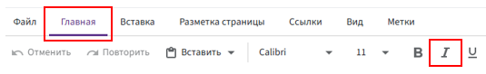
-
Через правую кнопку мыши, выбрав «Шрифт».
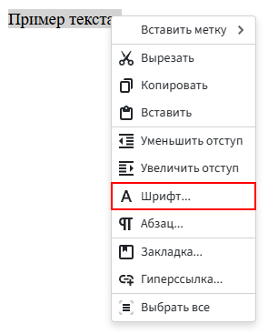
Стиль шрифта:
- Выделите текст, который хотите отредактировать.
- Перейдите на вкладку «Главная».
-
В группе «Шрифт» выберите нужный шрифт из выпадающего списка (например, Arial, Times New Roman и т.д.).
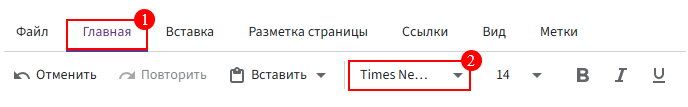
Размер шрифта:
- В той же группе «Шрифт» рядом с шрифтом есть поле для размера шрифта.
-
Выберите нужный размер из предложенного списка или введите нужное значение вручную.
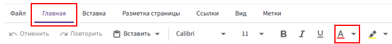
Типы начертания (жирный, курсив, подчеркивание):
- Выделите текст.
-
В группе «Шрифт» на вкладке «Главная»:
-
Для жирного текста нажмите на кнопку B (или используйте сочетание клавиш Ctrl + B).
-
Для курсива нажмите на кнопку I (или используйте сочетание клавиш Ctrl + I).
-
Для подчеркивания нажмите на кнопку U (или используйте сочетание клавиш Ctrl + U).
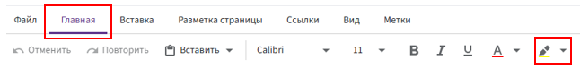
Выравнивание текста
ℹ️ Текст можно выровнять двумя способами:
- На вкладке «Главная».
- Через правую кнопку мыши, выбрав «Абзац».
Для этого:
- Выделите текст, который хотите выровнять.
- Перейдите на вкладку «Главная».
-
В группе «Абзац» выберите одну из кнопок для выравнивания текста:
- По левому краю: кнопка с иконкой выравнивания по левому краю (иконка с линиями, выровненными слева).
- По центру: кнопка с иконкой выравнивания по центру (иконка с линиями, выровненными по центру).
- По правому краю: кнопка с иконкой выравнивания по правому краю (иконка с линиями, выровненными справа).
- По ширине: кнопка с иконкой выравнивания по ширине (иконка с линиями, растянутыми на всю ширину).
-
Также можно использовать горячие клавиши.
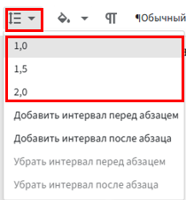
Цвет и выделение текста
ℹ️ Цвет текста можно изменить двумя способами:
- На вкладке «Главная».
- Через правую кнопку мыши, выбрав «Абзац».
Цвет шрифта:
- Выделите текст, который хотите изменить.
- Перейдите на вкладку «Главная».
- В группе «Шрифт» нажмите на кнопку «Цвет текста» (иконка с буквой A и цветом под ней).
-
Выберите желаемый цвет из предложенной палитры.
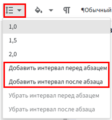
Выделение текста цветом:
- Выделите текст, который хотите изменить.
- Перейдите на вкладку «Главная».
- В группе «Шрифт» нажмите на кнопку «Выделение цветом» (иконка с маркером).
-
Выберите цвет маркера из предложенной палитры.
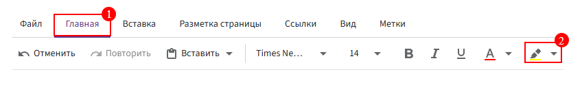
Интервал и отступы
ℹ️ Менять интервал и абзац можно двумя способами:
- На вкладке «Главная».
- Через правую кнопку мыши, выбрав «Абзац».
Междустрочный интервал:
- Выделите текст или абзац, в котором хотите изменить интервал.
- Перейдите на вкладку «Главная».
- В группе «Абзац» нажмите на кнопку «Интервал» (иконка с двумя стрелками вверх-вниз).
-
Выберите нужный интервал (например, 1.0, 1.5, 2.0). Более детальное изменение интервала через правую кнопку мыши, выбрав «Абзац».
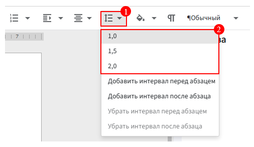
Интервал перед и после абзаца:
- Выделите текст или абзац, для которого нужно изменить интервал.
- Перейдите на вкладку «Главная».
- В группе «Абзац» нажмите на кнопку «Интервал» (иконка с двумя стрелками вверх-вниз).
-
Выберите «Добавить интервал перед абзацем» или «Добавить интервал после абзаца». Более детальное изменение интервала через правую кнопку мыши, выбрав «Абзац».
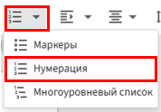
Установка отступов:
- Выделите абзац или текст.
- Перейдите на вкладку «Главная».
-
В группе «Абзац» используйте кнопки «Увеличить отступ» или «Уменьшить отступ» для настройки отступа с левого края. Более детальное изменение отступов через правую кнопку мыши, выбрав «Абзац».
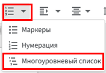
Нумерованные и маркерованные списки
Маркеры (Список с точками):
- Выделите текст или абзацы, которые хотите оформить маркерами.
- Перейдите на вкладку «Главная».
- В группе «Абзац» нажмите на стрелочку рядом с кнопкой «Нумерация» (иконка с числами 1, 2, 3).
-
Выберите «Маркеры».
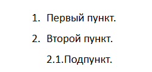
Нумерация:
- Выделите текст или абзацы, которые вы хотите пронумеровать.
- Перейдите на вкладку «Главная».
-
В группе «Абзац» нажмите на кнопку «Нумерация» или на стрелочку рядом с кнопкой (иконка с числами 1, 2, 3).
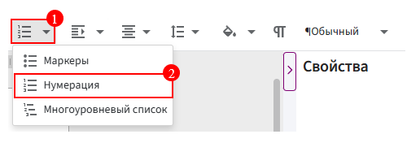
Многоуровневый список:
- Выделите текст, который хотите оформить многоуровневым списком.
- Перейдите на вкладку «Главная».
- В группе «Абзац» нажмите на на стрелочку рядом с кнопкой «Нумерация» (иконка с числами 1, 2, 3).
-
Выберите «Многоуровневый список» (иконка с несколькими уровнями).
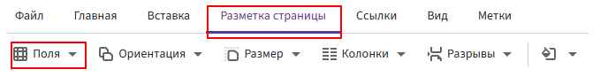
Переключение между уровнями:
- Чтобы переключиться на более низкий уровень (например, 2.1), нажмите Tab на клавиатуре. Это сдвигирует пункт вправо.
- Чтобы переключиться на более высокий уровень (например, 3), нажмите Shift + Tab. Это сдвигивает пункт влево.
Настройка полей
❗ Размер полей указан в дюймах.
Вы можете перевести сантиметры в дюймы с помощью онлайн-калькулятора или вручную. Чтобы перевести X сантиметров в дюймы, умножьте количество сантиметров на 0.393701: X см × 0.393701 = дюймы.
-
Перейдите на вкладку «Разметка страницы».
-
В группе «Поля» выберите один из предложенных вариантов:
- Обычные — стандартные поля (верхнее и нижнее по 2 см, левое 3 см, а правое 1,5 см).
- Узкие — поля уменьшены до 1.27 см.
- Средние — поля среднего размера (верхнее и нижнее по 2,5 см, левое и правое 1,9 см).
- Широкие — увеличенные поля (верхнее и нижнее по 2,5 см, левое и правое 5 см).
- Настраиваемые поля — позволяет настроить поля вручную.
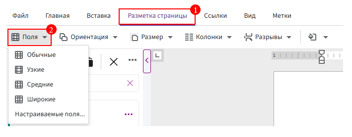
Фон страницы
Фон одним цветом:
- Перейдите на вкладку «Разметка страницы».
- Нажмите «Выбор цвета для фона страницы».
-
Выберите желаемый цвет из предложенной палитры.
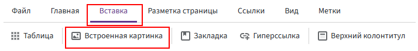
Фон картинкой:
- Перейдите на вкладку «Вставка».
- Выберите «Встроенная картинка» и загрузите её с устройства.
- Щелкните правой кнопкой мыши по картинке, нажмите «Обтекание текстом» и выберите «За текстом».
-
Если необходимо растяните картинку по странице.
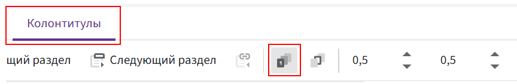
Колонтитулы
ℹ️ Перейти в колонтитулы можно двумя способами:
- На вкладке «Вставка» выбрать «Верхний колонтитул» или «Нижний колонтитул».
- Дважды щелкнуть левой кнопкой мыши по верхнему или нижнему полю страницы, чтобы перейти в режим редактирования колонтитула.
Вставка изображения в колонтитул:
- Поставьте курсор в колонтитул.
- Перейдите на вкладку «Вставка» и выберите «Встроенная картинка».
-
Нажмите на картинку левой кнопкой мыши и измените её размер, растягивая или сужая её за появившуюся рамку.
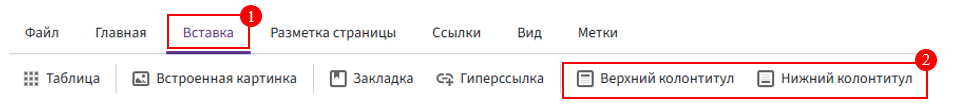
Нумерация страниц
ℹ️ Перейти в колонтитулы можно двумя способами:
- На вкладке «Вставка» выбрать «Верхний колонтитул» или «Нижний колонтитул».
- Дважды щелкнуть левой кнопкой мыши по верхнему или нижнему полю страницы, чтобы перейти в режим редактирования колонтитула.
Принцип работы:
- Поставьте курсор в колонтитул.
- Перейдите на вкладку «Вставка» и выберите «Номер страницы».
-
Через вкладку «Главная» или правой кнопкой мыши, выбрав «Абзац», измените положение нумерации, если это необходимо.
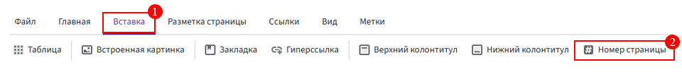
Дополнительные функции:
-
Можно использовать особый колонтитул для первой страницы. Для этого, оставшись в колонтитуле на первой странице, перейдите на вкладку «Колонтитулы» и выберите значок для особого колонтитула:
-
Можно использовать разные колонтитулы для четных и нечетных страниц. Для этого, оставшись в колонтитуле на одной из страниц, перейдите на вкладку «Колонтитулы» и выберите значок для разных колонтитулов:
-
Можно изменить расстояние между колонтитулом и краем страницы. Для этого, оставшись в колонтитуле на нужной странице, перейдите на вкладку «Колонтитулы» и отрегулируйте расстояние. Левое поле ввода отвечает за верхний колонтитул, а правое — за нижний:
Таблицы
ℹ️ Таблицу удобно использовать для размещения города и даты в одной строке.
Создать динамическую таблицу можно при помощи метки «Таблица».
Создание таблицы:
- Перейдите на вкладку «Вставка».
-
В группе «Таблицы» нажмите «Таблица» и выберите нужное количество строк и столбцов.
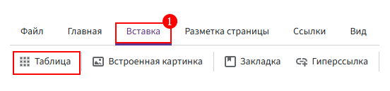
Вставка данных в таблицу:
- После создания таблицы щелкните в ячейке и начните вводить текст.
- Вы можете перемещаться по ячейкам с помощью клавиши Tab (для перехода в следующую ячейку) или Shift + Tab (для перехода в предыдущую ячейку).
Редактирование таблицы:
-
Добавление или удаление строк/столбцов:
- Для добавления строки или столбца щелкните правой кнопкой мыши по ячейке и выберите «Вставить» — затем выберите «Вставить слева», «Вставить справа», «Вставить сверху» или «Вставить снизу».
-
Для удаления строки или столбца, выделите нужные ячейки, нажмите правой кнопкой мыши и выберите «Удалить ячейки».
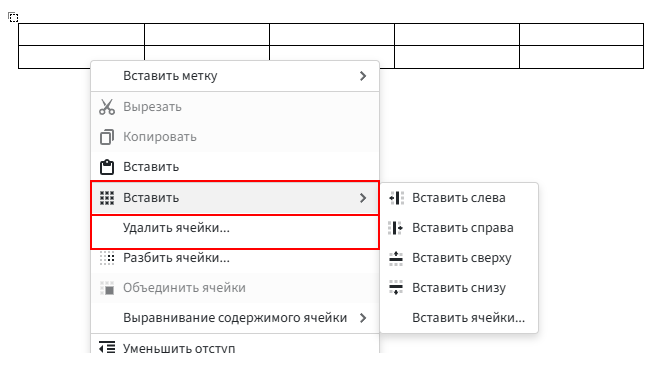
-
Выравнивание содержимого ячейки:
-
Чтобы выровнять текст в ячейках, выделите нужные ячейки, щелкните правой кнопкой мыши и выберите «Выравнивание текста в ячейке», затем выберите нужное выравнивание.
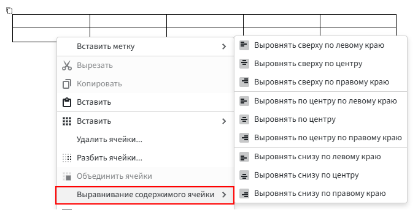
-
Настройка границ:
-
Добавление/удаление границ:
- Выделите ячейки (ячейку).
- Перейдите на вкладку «Конструктор».
-
Нажмите на кнопку «Границы».
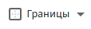
-
Уберите или добавьте границы.
-
Изменение цвета границ:
- Выделите всю таблицу или нужные ячейки.
- На вкладке «Конструктор» нажмите иконку «Цвет границы» (карандаш).
- Выберите цвет из палитры.
-
Нажмите на кнопку «Границы» и выберите те стороны ячеек, которые хотите выделить цветом.
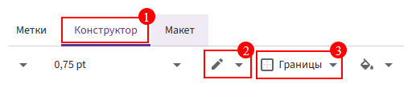
-
Изменение типа линий:
- Выделите всю таблицу или нужные ячейки.
-
На вкладке «Конструктор»:
-
Разверните список «Одинарный».
-
Выберите стиль (одинарный, пунктирный и т.д.)
-
-
Нажмите «Границы» → укажите стороны для применения
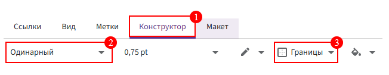
Удаление таблицы:
- Выделите таблицу, затем нажмите Backspace или выберите «Удалить таблицу» через контекстное меню, которое открывается правой кнопкой мыши по нажатию на таблицу.
Разрывы
Разрыв страницы:
Разрыв страницы используется, чтобы начать новый раздел текста на новой странице.
- Поместите курсор в место, где вы хотите начать новую страницу.
- Перейдите на вкладку «Разметка страницы».
- В группе «Разрывы» выберите «Разрыв страницы».
- Или используйте горячие клавиши.
Следующая страница:
Следующая страница позволяет разделить документ на части, в которых можно использовать разные настройки для ориентации, полей или нумерации страниц.
- Поместите курсор в место, где хотите вставить разрыв.
- Перейдите на вкладку «Разметка страницы».
- В группе «Разрывы» выберите «Следующая страница».
Разрыв колонки:
Разрыв колонок используется, чтобы начать новый раздел текста с новой колонки.
- Перейдите на вкладку «Макет».
- Перейдите на вкладку «Разметка страницы».
- В группе «Разрывы» выберите «Разрыв колонки».
Чётная страница:
Разрыв «Чётная страница» начинает новый раздел на первой чётной странице. Это полезно, если нужно, чтобы раздел начинался с правой страницы на двухсторонней печати (например, если в документе используется обложка или другие элементы, требующие начала с чётной страницы).
- Перейдите на вкладку «Разметка страницы».
- В группе «Разрывы» выберите «Чётная страница».
Нечётная страница:
Разрыв «Нечётная страница» начинает новый раздел с первой нечётной страницы. Это также полезно для документов с двусторонней печатью, когда раздел должен начинаться с левой страницы (нечётной).
- Перейдите на вкладку «Разметка страницы».
- В группе «Разрывы» выберите «Нечётная страница».
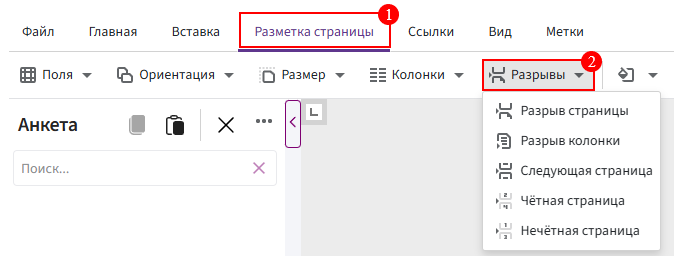
Ориентация страницы
Изменение ориентации ВСЕГО документа:
- Перейдите на вкладку «Разметка страницы».
- В группе «Ориентация» выберите «Книжная» (для вертикальной ориентации) или «Альбомная» (для горизонтальной ориентации).
Изменение ориентации ЧАСТИ документа:
- Выделите текст или часть документа, для которой нужно изменить ориентацию.
- Перейдите на вкладку «Разметка страницы».
- В группе «Разрывы» выберите «Следующая страница», чтобы применить разрыв раздела и изменить ориентацию только для выбранной части документа.
- Затем, на этой же вкладке, в группе «Ориентация» выберите «Альбомная» или «Книжная».
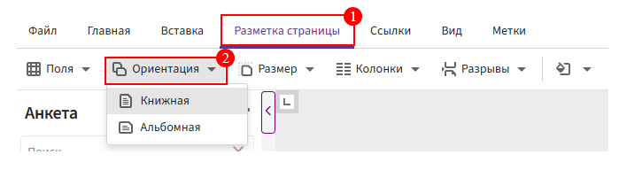
Работа с изображением
Вставка изображения с компьютера:
-
Перейдите на вкладку «Вставка» и выберите «Встроенная картинка».
-
Подгрузите изображение со своего устройства.
Вставка скриншота:
- Сделайте скриншот с помощью Print Screen (PrtScn) на клавиатуре:
- PrtScn — снимет весь экран.
- Alt + PrtScn — снимет только активное окно.
- Windows + Shift + S — позволяет выбрать область экрана для захвата (в Windows 10 и 11).
- После того как скриншот сделан, вернитесь в Word и вставьте его с помощью Ctrl + V